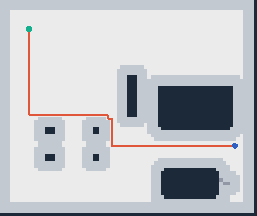
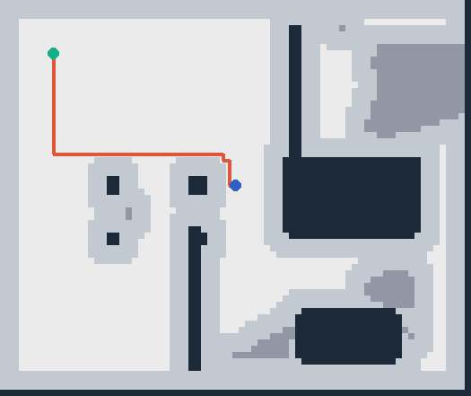

客厅
21 个实例 · 31,618 顶点 · 路径回放通过
21 个实例 · 31,618 顶点 · 路径回放通过

22 个实例 · 场景图、碰撞体和导航路径

23 个实例 · 长路径和窄通道导航
在仓库根目录执行，生成客厅、办公室和走廊三个七层结果。
python3 -m venv .venv .venv/bin/pip install numpy scipy scikit-image trimesh pillow mujoco pytest PYTHONPATH=src .venv/bin/python scripts/generate_demos.py